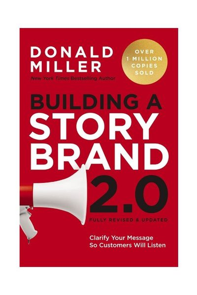

Library › Business & Startups
Building a StoryBrand — Summary & Key Lessons

Clarify your message so customers will listen — your customer is the hero; you're the guide.
📖 OPEN THE FULL INTERACTIVE BREAKDOWN →🌐 Read it in Hindi, Hinglish, Gujarati, Tamil & 22 more languages — free, with audio.
💡 The Big Idea
Brains conserve calories: confusing messages get filtered out before comprehension ('if you confuse, you lose'), and most marketing confuses because companies cast THEMSELVES as the hero — trumpeting their history, awards, passion — while the customer scrolls past looking for one thing: someone who can help THEM win THEIR story. Miller's SB7 framework scripts it: (1) A CHARACTER (the customer) who wants something specific; (2) with a PROBLEM — external (the flat tire), internal (the frustration/self-doubt it causes — people buy solutions to INTERNAL problems), philosophical (why it's just plain wrong); (3) meets a GUIDE (you — expressing EMPATHY 'we understand' + AUTHORITY 'we've done this': testimonials, logos, numbers); (4) who gives them a PLAN (3-step process plan that removes the fog + agreement plan that removes the fear); (5) CALLS THEM TO ACTION (one direct, repeated, unmissable button — 'Buy Now,' not 'Learn More' whispers); (6) helping them avoid FAILURE (name the stakes — no stakes, no story); (7) ending in SUCCESS (paint the after-picture: status restored, completeness, self-acceptance). Then grunt-test everything: within 5 seconds of seeing your site, can a stranger answer — what do you offer, how does it make my life better, how do I buy?
🧠 The 4 Key Lessons
Lesson 1: You're Yoda, Not Luke: The Guide Position
Chapters 1-5
Every story has one hero — and when your marketing competes for that role ('founded in 1987, we are passionate about excellence...'), the customer experiences you as another character shouting for attention, not help. The guide position is stronger AND humbler: guides exist to serve the hero's transformation, and they earn the role with exactly two credentials — EMPATHY (evidence you understand the customer's pain: 'we know what it feels like when...') and AUTHORITY (competence signals, briefly: testimonials, stats, recognizable clients — a whiff, not a resume; Yoda doesn't open with his CV). The internal-problem insight powers it: companies sell solutions to external problems (accounting software), customers buy relief from internal ones (feeling out of control, fear of looking incompetent) — find the internal frustration your category creates and speak to THAT.
📖 Example: Miller's running case: a luxury resort whose website led with 'our story' — decades of family heritage, renovation details, staff pride (hero-brand syndrome, wall of text). Rewritten as guide: hero-image of a massage and a warm pool, headline 'Find the… Read the full example →
⚡ Do this: Audit your homepage/profile: count sentences where the subject is 'we/I' vs 'you.' Rewrite until the customer is the grammatical hero of the first screen — one empathy line, one authority whiff, and their transformation in the headline.
Lesson 2: Give Them a Plan and Call the Shot
Chapters 8-9
Customers don't fear your price; they fear the FOG — what happens after I pay? Will this work for someone like me? The PROCESS PLAN dissolves it: name 3 steps ('1. Book a call → 2. We build your system → 3. You launch in 30 days') — suddenly the path lights up and commitment feels safe (three steps is the magic; seven reads like homework). The AGREEMENT PLAN dissolves risk-fear: list what you promise (guarantee, no lock-in, data ownership). Then the CALL TO ACTION: one primary action, visually loud, repeated shamelessly (top-right button + every scroll-depth) — 'Buy Now,' 'Schedule a Call,' 'Start Free.' Passive CTAs ('learn more,' 'get in touch') signal your own doubt. Add a TRANSITIONAL CTA (free guide, sample, webinar) for the not-yet-ready — it stakes your territory as guide while they warm up. Miller's rule: customers don't do fuzzy math; if the next step isn't obvious, the next step is leaving.
📖 Example: Miller's favorite small-business demo: a garage-storage company whose site listed products and 'contact us.' StoryBranded: headline about the internal problem ('tired of a garage you can't park in?'), a 3-step plan (design consult → custom build → love your… Read the full example →
⚡ Do this: Write your 3-step process plan and put it on your main page this week (icons + one line each). Change your primary button to a direct action verb, make it your loudest visual element, and repeat it at least three times per page.
Lesson 3: Stakes and Transformation: No Failure, No Story
Chapters 10-11
A story where nothing can go wrong is a screensaver — yet most brands only sunshine-talk. Loss aversion says the stakes slide is your most persuasive: name (tastefully, briefly — a pinch of salt, not a horror film) what customers avoid by choosing you: wasted budgets, another failed launch, staying invisible, the Sunday-night dread continuing. Then complete the arc with SUCCESS made concrete: not 'great results' but the specific after-state — and deeper, the IDENTITY transformation: every purchase is aspirational (from overwhelmed to in-control, from amateur to taken-seriously, from anxious to confident). Miller's closing tool: define the FROM → TO of your customer's identity and become the brand that officiates that graduation — because people pay for products, but they evangelize for who the product let them become.
📖 Example: Miller's identity exhibit: Gerber Knives' 'Hello Trouble' campaign — barely about blades at all; a hymn to the capable, unafraid person who OWNS such a knife. Sales followed identity. His everyday version: the financial advisor who stopped selling… Read the full example →
⚡ Do this: Fill in three blanks and deploy them this week: 'Without this, customers keep [failure state]' (one stakes line for your page), 'With it, they finally [specific success picture]' (one after-image), and 'They go from [old identity] to [new identity]' (your true product — say it everywhere).
Lesson 4: The One-Liner and the Funnel: Deploying Your StoryBrand
Chapters 12-14: Implementation
The framework earns nothing until it's deployed through Miller's implementation stack. THE ONE-LINER: a single spoken sentence combining problem + solution + result ('Most small businesses waste money on marketing that doesn't work; we build simple messaging that turns browsers into buyers') — your answer to 'what do you do?', engineered so the listener can repeat it to someone else (the real test: your one-liner is only working when strangers quote it back). THE LEAD GENERATOR: a free, genuinely valuable asset (checklist, guide, mini-course) titled around the customer's problem — because 'subscribe to our newsletter' is asking for marriage on the first date, while 'The 5 Mistakes Killing Your Garage Space' earns the email by paying first. THE NURTURE CAMPAIGN: regular value-first emails (tips, stories, announcements) where most messages give and only some ask — trust compounds in the inbox precisely because everyone else's emails only take. And THE SALES LETTER SEQUENCE for launches: problem agitated, guide introduced, plan shown, stakes named, testimonial proof, direct call to action — the seven-part framework compressed into a repeatable email arc. None of it is creative writing; all of it is the same story, told at five altitudes.
📖 Example: Miller's implementation case: Marie, a financial planner whose networking answer had been her title ('I'm a wealth advisor with [firm]' — conversation over). Rebuilt as a one-liner: 'You know how most families feel anxious about money even when they earn… Read the full example →
⚡ Do this: Write your one-liner tonight using the formula (problem + solution + result), then road-test it ten times this month as your answer to 'what do you do?' — revise until people ask a follow-up question. Then build one lead generator titled after your customer's most painful problem, and commit to a value-first email every two weeks: give, give, give, ask.
✅ 5-Step Action Plan
- Recast your marketing: customer as hero, you as guide with empathy + authority.
- Name the internal problem your category creates — sell relief from that.
- Publish a 3-step plan and one loud, repeated, direct call to action.
- Add stakes: one line about what's lost by not acting.
- Script the identity arc — from X to Y — and repeat it until customers quote it.
💬 Best Quotes from Building a StoryBrand
- “If you confuse, you'll lose.”
- “The customer is the hero, not your brand.”
- “People don't buy the best products; they buy the products they can understand the fastest.”
Interactive version: mark lessons as read, listen in your language, share quote cards.